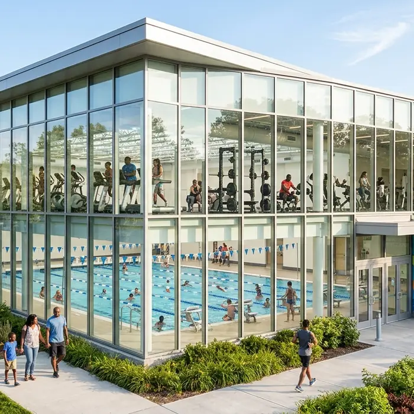

Recreation Center

The Community Recreation Center keeps Orem active all year. Its glass-walled fitness floor looks out over the valley, and the indoor pool stays open even on the coldest winter days.
Day passes and family memberships make it easy to swim laps, join a fitness class, or sign the kids up for summer camp.
Features
- Indoor lap pool and leisure pool
- Fitness floor with cardio and weight equipment
- Group fitness and yoga classes
- Indoor basketball and pickleball courts
- Youth camps and swim lessons
Address
Orem Community Recreation Center580 West Aquatics Way
Orem, UT 84058